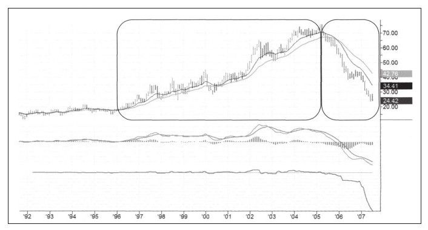
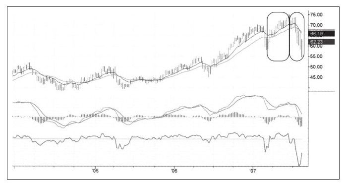
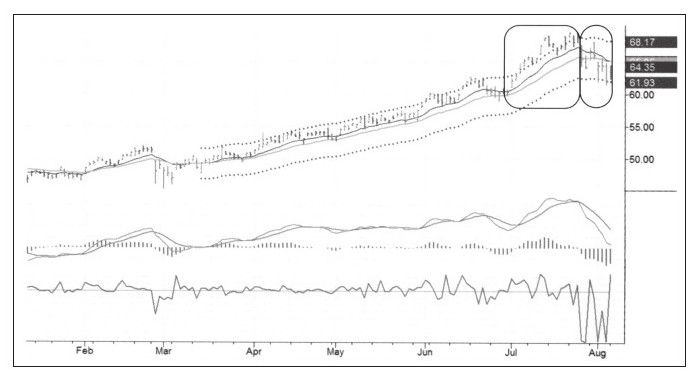
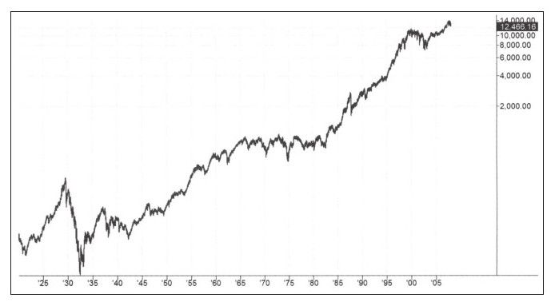
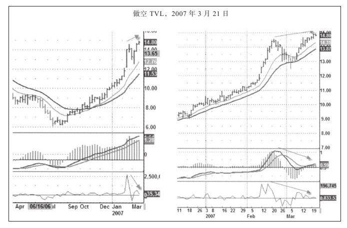
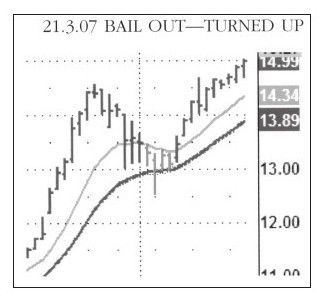

有一个基本的偏见是为了做空，你必须解放自己的思想。多数人会觉得做多比做空容易赚钱，但我认为他们应该像年轻人一样接受这种偏见。有一次我给当地高中学生讲交易课程，那些孩子特别热衷于做空。当时，我要求他们带来自己的交易想法，在课上讨论并实施。每一天，这些孩子们做空的次数和做多的次数基本一致，甚至还有人同时做空和做多。
这些孩子们掌握了交易的基本原则，他们懂得了交易意味着向价格运动的方向下注，但与向上涨或下跌下注关系不大，你需要做的仅仅是确认方向、入场价、盈利目标价和止损价。这些孩子们不够客观，也允许他们做空。全班同学在做多做空中获得了一些利润，尽管也有亏损，但总体来说是盈利的。这就是那次奇妙的多空授课之旅。
作为做空者，我认为做空者在追寻自己利润的同时，也在为市场提供重要的公共服务。第一，通过卖出高估的股票，做空者增加了股票的供给，平抑了市场的过度波动。当价格过高时做空股票有助于稳定价格波动。第二，当股票出现严重下跌时，做空者是第一个买进的人，这又会让股票止跌。做多者的轻佻性格会让他们在严重下跌时缩手缩脚，首先开始买入股票的人大多是从暴跌中做空的获利者。他们买入股票会缓解下跌趋势，而此时也是便宜股猎手开始入场的时机。第三，你可能已经知道了，就是底部将在此形成，股价开始回暖，是做空平抑了市场价格的过度波动以使大众受益。
虽然做空有以上功能，但我的意思不是说做空者是一群社会工作者，正如著名经济学家亚当·斯密所说：在自由市场中的人们通过做与自己有利的事情来帮助别人。只要熊市不是由大量卖空者造成的，熊市就帮助了市场，这条警示同样适用于在上升趋势中做多的投机者。
因为政府有一个合法的机构来管理市场，该机构制定了一些对做空者不合逻辑的管制条例，其中最令做空者头疼的一条就是“证券报升交易规则”。[1]这条规则规定做空者只能以高于最新价的价格做空，换句话说，做空者只能在股票上涨中做空。表面上看，这会保护买入者免遭大量做空者的抛售之苦，但我有个问题就是：为什么没有与此对立的一个“证券报跌交易规则”，来保护那些被牛市横扫出局的无知的做空者？如果“证券报升交易规则”合理的话，那“证券报跌交易规则”也应该被允许。
在撰写本书第1版期间，美国股市大幅上涨。政府取消了“证券报升交易规则”。这条运行了70年的愚蠢规则终于寿终正寝！当然，期货市场上从没有过这样的规则。在2008~2009年的市场暴跌中，政府也只是发令禁止卖空几个行业的股票而已。
与做多相比，做空有几个明显的优势和一个巨大的劣势。做空的一个重要优势就是跌的速度是涨的速度的两倍，这个规律几乎适用于所有周期，如图7-1中的月线、图7-2中的周线和图7-3中的日线所示，日内交易也有类似的规律。
只有不停地买入，股价才会上涨，但即便没有做空者，股价也会下跌。更快的下跌速度为有经验的交易者提供了现实的优势，交易越快结束，交易者暴露在市场风险中的时间就越短。
对做空者的巨大不利是，长期来看，股票市场一直是上涨的（见图7-4）。这种情况称为缓慢上涨模式，原因是一些老股票消失和新股票加入。另外，这种模式的年均上涨大约为3%左右，意味着做空是在巨大的上涨趋势中逆势而为。




在股票中的每个动作都是把双刃剑，一面是益处，另一面是危险。交易者不可能完全将二者分开，同时关注这两个方面对交易者来说是基本和现实的要求。请思考，我们对上述做空的有利和不利两个方面该做出怎样的回应？
通常来说，做空比做多需时更少。做空者是在大的上升浪中穿梭，下跌趋势更快，因此交易者做空时不该给像做多时那么多时间。
新手经常会问如何找到可以做空的股票，我给他们的建议是回想那些你买了却让你亏钱的股票，回想那些你希望下跌的股票，找到你最讨厌的股票然后做空它。
友情提醒：别在第一次做空时使用太多资金，第二次或者更多次时也不能，做空规模一定要小。
第一次尝试别太在意盈亏，你还有很多其他的事情要思考，比如选择股票、寻找盈利目标、设置止损及学习下单技术。在用小头寸交易时确保学会这些以及其他的一些事情，小头寸交易不会让你掺杂过多的情感因素。
交易规模是情绪的放大器，规模越大，压力越大。为了减少压力，尤其是在交易早期，只要还在学习做空，就用小头寸进行交易。放轻松，只要你能适应做空交易，就会有很多机会来增加交易头寸。
在写本章的前几周，一天早晨我在家进行交易，手提电脑突然发出信号响声，有一封电子邮件发过来，是交易训练营学员齐维·本亚米尼发给我的，他说他要开始做空，我建议他把要做空的股票的分析用训练营中学到的格式写下来，几分钟后电子邮件又发过来了（见图7-5）。
这是一个聪明人以最低的成本学习做空的经典案例。这名学员找到了股票并独立做出交易计划。他做了一个很好的交易入场日记并记录了决策过程。作为一个独立的人，无论做多做空，都使用了很小的交易头寸。这次交易尽管最后加上佣金他每股损失20美分，总共损失20美元，但用很小的资金风险，他就从中学到了很多。他可以承担得起很多这样的“学费”，而不会被其损失所累。

我不喜欢在那天把TVL作为做空对象。首先，做空的时机不对，股票市场刚刚从双底中走出，整个市场正在上涨，当时我已经平掉了所有的空单。更深层次的原因是，做空连续上涨几周的股票感觉上很不对。
做多时，买入不断创新低的股票不是什么好主意，低买没问题，但是买跌就不对了。同样，当想做空时，做空不断创新高的股票也不是什么好主意。你需要找到证据表明价格趋势见顶、股价不再上涨并准备转跌的股票。
这名学员做空正在上涨的股票时犯了两个错误，但同时却做了两件正确的事：他做了细致的注释及小规模头寸交易。因此，他的错误没酿成大祸，他为这次学习过程付了很少的学费。
当天交易结束后我收到了图7-6。

[1]证券报升交易规则（Uptick Rule），即做空的价格必须高于最新的成交价，该项规则起初是为了防止金融危机中空头打击市场而导致暴跌。——译者注